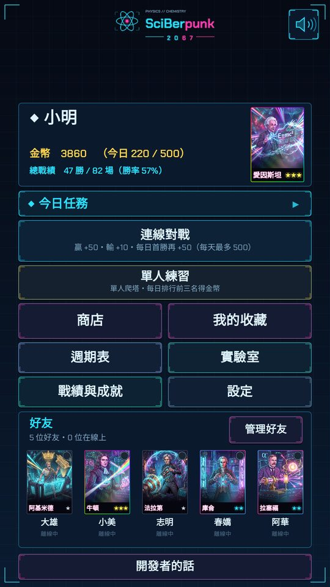
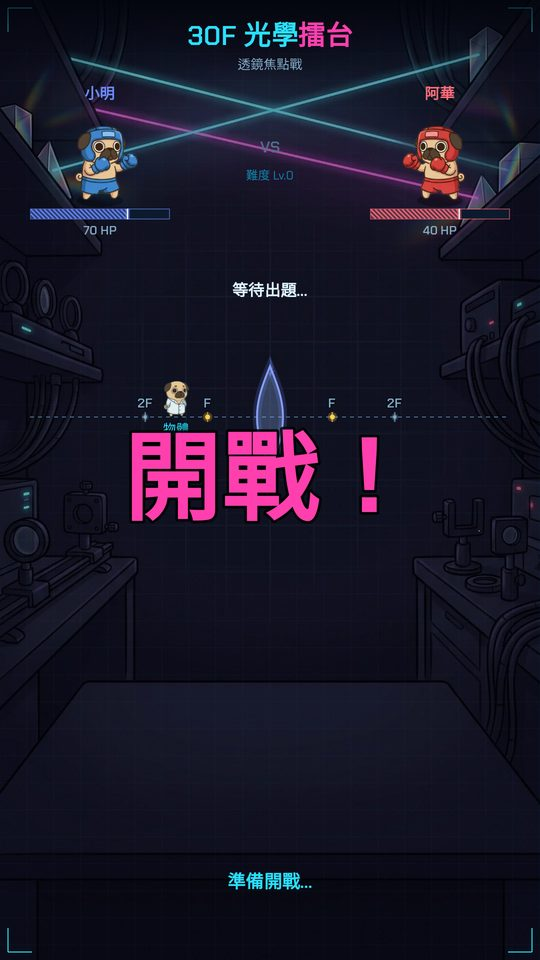
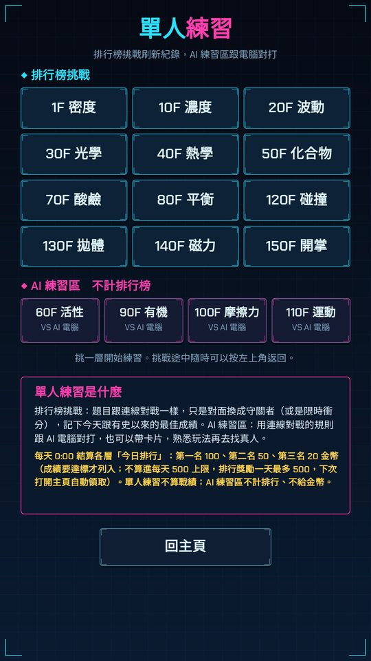
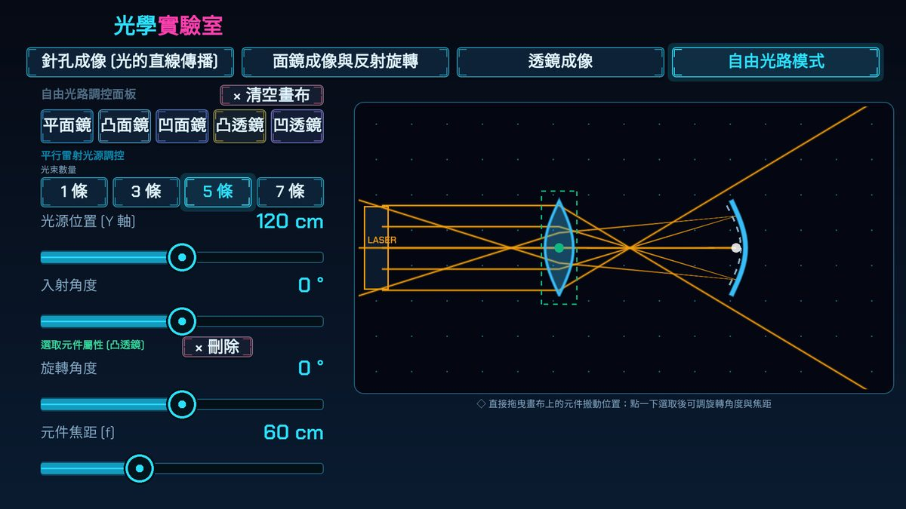
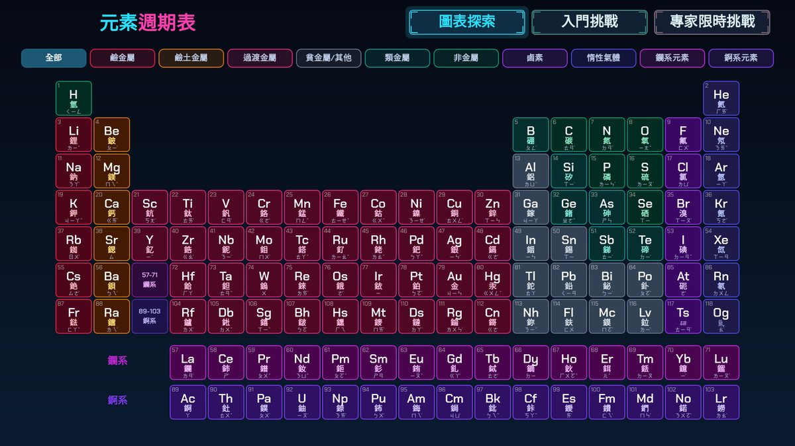

SciBerpunk 2067
國高中理化互動學習遊戲
從元素週期表、互動實驗室到理化擂台連線對戰，用遊戲的方式把國二到高一的理化觀念練熟。
國高中理化互動學習遊戲
從元素週期表、互動實驗室到理化擂台連線對戰，用遊戲的方式把國二到高一的理化觀念練熟。
SciBerpunk 2067 是由個人開發者製作的理化學習遊戲，對象是國中到高一的學生，也可以在教室的電子白板上讓兩位同學同屏對戰。遊戲沒有廣告，也沒有付費購買。
118 個元素的資料與入門／專家測驗。
密度、光學、化學平衡、電學……自由拉滑桿、做實驗，看見公式背後的現象。
每一層是一個理化單元，和同學連線一對一對戰，或挑戰單人練習排行榜。
用斜面、滑輪、磁鐵等零件設計連鎖機關，在玩的過程中體會力學。





手機版（網頁版與 Android App）可以用 Google 帳號登入，用來建立你的遊戲帳號：
詳細內容請看 隱私權政策。
SciBerpunk 2067 is an educational physics and chemistry game for middle and high school students (grades 8–10), made by an individual developer. It includes an interactive periodic table, 18 hands-on virtual labs, a contraption builder, and online one-on-one quiz battles. There are no ads and no in-app purchases.
Google Sign-In: players can sign in with their Google account to create a game account. The game only uses the email address and Google account ID to identify the account, so that progress, online matches, friends and leaderboards are saved across devices. Email addresses are never shown to other players, data is never sold or used for advertising, and players can delete their account and all data at any time in the game (Settings → Delete account). See the Privacy Policy.